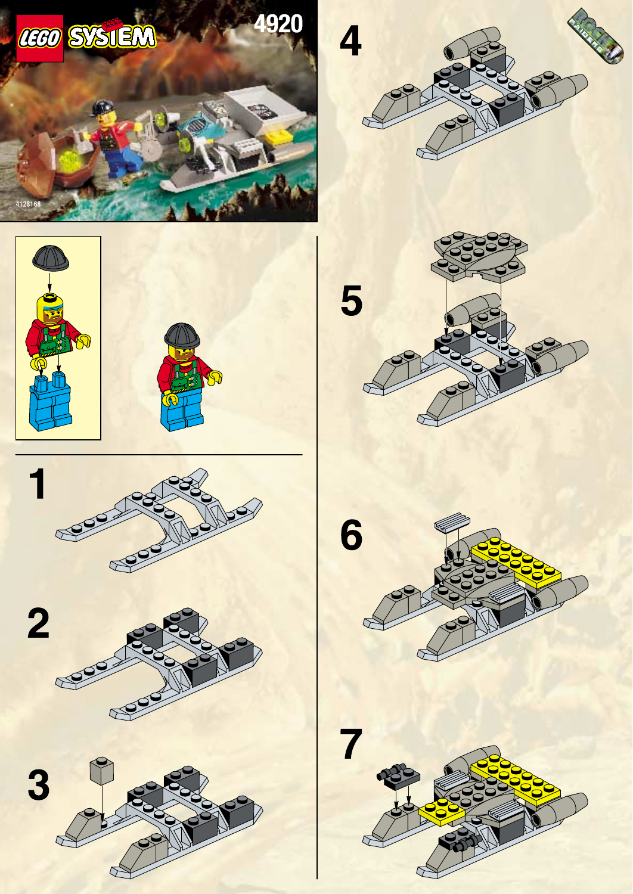

1. Production Design Target · SOURCE_LOCKED
{kind=link}
2. Source Evidence

Відкрити офіційну сторінку 2 інструкції
{kind=link}
Хеші та походження обох сторінок: Rapid Rider source evidence manifest.
Першоджерело: LEGO 4920 instruction PDF. SHA-256 PDF: 14fbe2a681049eacf5efc82d37e8a8cb555739e2f06a2b87d31c099bf066c3cd. Джерельні растра — дослідницькі референси, не ігрові текстури.
3. Design Spec
Зовнішній вигляд Rapid Rider — завершений набір LEGO 4920. Зберегти джерельні пропорції машини, відкриту середину та вантажну чашу, конструктивний ритм і кольори набору. Один стандартний водій залишається на джерельному місці. Не переробляти чашу на пасажирський салон, не додавати лаву, не змінювати розмір Crew і не збільшувати корпус. Інструкція має неповне покриття деяких прихованих ракурсів: там продовжити лише підтверджену LEGO конструкцію, не вигадувати нові зовнішні форми.
Командна мітка: не додається до джерельного корпусу в цій цілі. Матеріали: відповідати видимим кольорам і ролям деталей офіційного набору; без нового постійного світіння.
Стани: рух і зупинка зберігають ту саму зовнішність; презентаційна анімація відображає чинний стан симуляції. Додаткового пасажира чи альтернативний вантаж у цій цілі не зображати.
Повна специфікація T083: rapid_rider.md.
Відхилена пропозиція з чотирма Crew
Директор відхилив попередню ADAPTED-композицію з чотирма Crew у чаші, бо вона відходила від масштабу LEGO-набору. Вона не є ціллю, джерелом геометрії чи вказівкою для T084.
Вигляд додаткового пасажира в чаші або заміни пасажира на вантаж зараз відкладено. Це не змінює чинну місткість чи правила перевезення; окремий видимий стан можна розглянути пізніше.
Межі доказу та схема
Офіційна інструкція не показує руху на воді/суші й не дає повних ортографічних ракурсів. Це не підстава додавати геометрію. Точна деталізація прихованих вузлів та перевірка моделі/камери належать до подальшої виробничої роботи.
NON-AUTHORITATIVE technical/explanatory schematic: не використовується. Схема не замінює Production Design Target.
Рішення директора
Rapid Rider прийнято як SOURCE_LOCKED за офіційним LEGO 4920: один водій, джерельний зовнішній вигляд і пропорції. Попередня чотиримісна адаптація відхилена. Додатковий пасажир/альтернативний вантаж на цьому етапі не визначається.
T084: авторизовано для цього юніта, але моделювання ще не почалося.